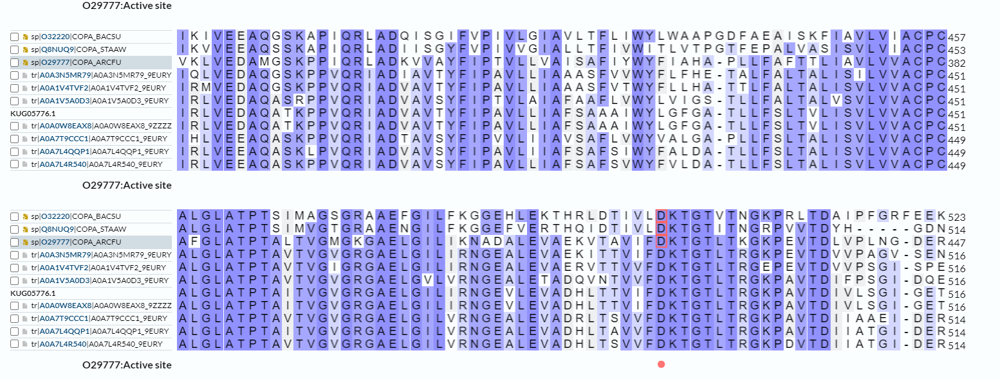
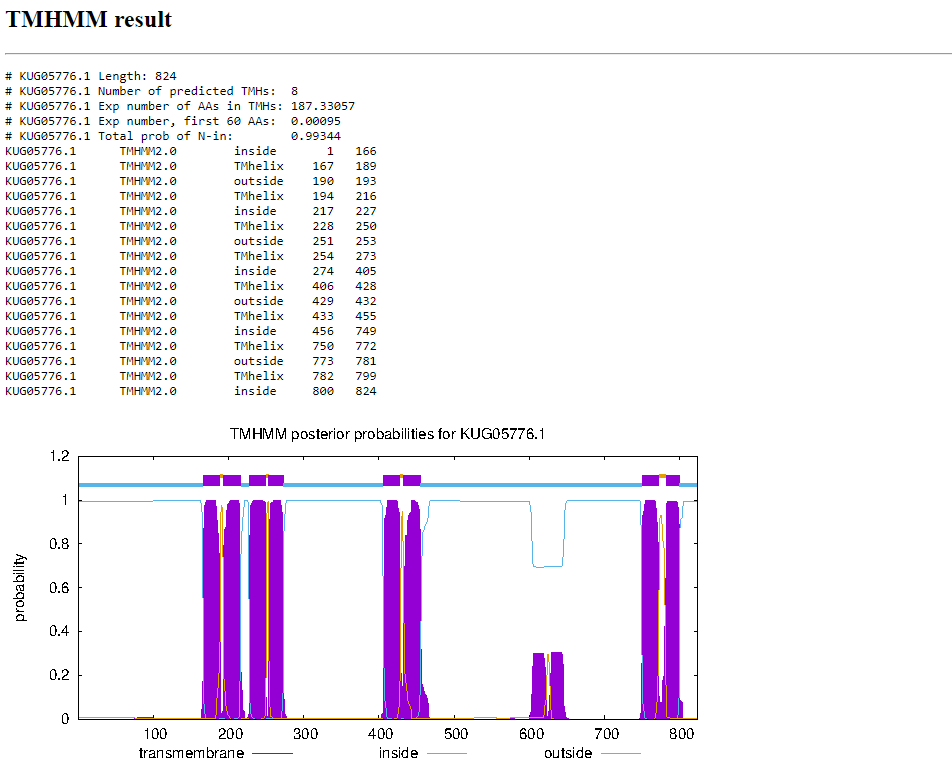
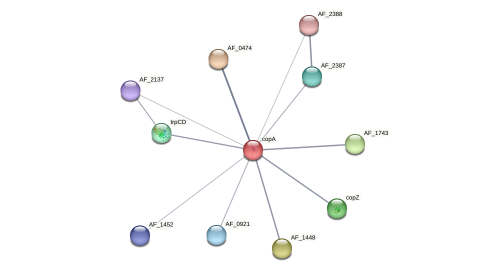
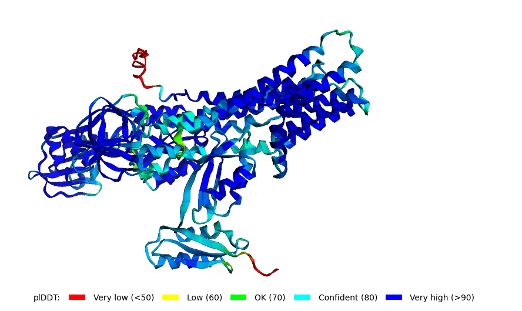
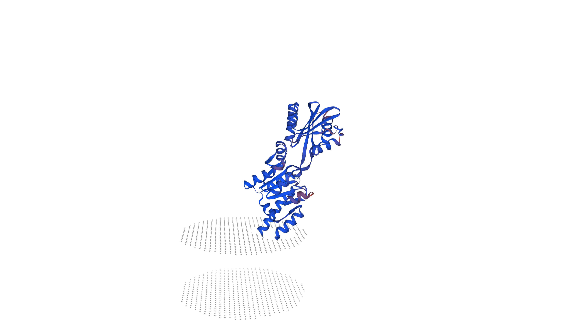
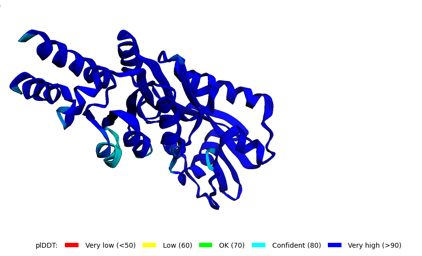

S29#
Avtor: Lucija Kovaček
Datum izdelave:2023-05-25
Koda seminarja: S29
Vhodni podatek#
Zaporedje:
VVLEGGSYVDESMITGEPVPVLKSPGARVVGGTLNTTSVFSFRADRIGKDTALARIIRLV
EDAQATKPPVQRIADVAVTYFIPAVLLIAFSAAAIWYLGFGATLLFSLTV
Rezultati analiz#
Identifikacija#
Protein: ATP-aza, ki prenaša svinec, kadmij, cink in živo srebro (angl. lead, cadmium, zinc and mercury transporting atpase)
Organizem: ni znan organizem, gre za hydrocarbon metagenome (ogljikovodikov metagenom)
Potencialna funkcija proteina: transport skozi membrano s sposobnostjo hidrolize molekule ATP
Identifikacija je bila narejena z uporabo NCBI BLAST, varianta blastp (zbirka metagenomic proteins env_nr). Značilna podobnost je bila najdena za celotno zaporedje, in sicer je aminokislinsko zaporedje podobno zaporedju predpostavljene ATP-aze (100 % identičnost, E vrednost 1e-66).
Prikaz zadetkov v tabeli:

Koda zapisa z BLAST identificiranega proteina: GenBank KUG05776.1
Aminokislinsko zaporedje:
>KUG05776.1_ak
MENGEEVQADLKITGMHCASCALTIEDSVKKLGKGVEVQVNFGTDSAHVVYDPEKVSLTEIEGAIRSAGY
EVIHQDVVIRVGGMVCAMCVETIEHALSALPGISRVRVNLATESAFVTYNPSIASVREMRSAIEDAGYQY
LGIAGELSLEAEEEARQKDLTEKFRRFSLGFAVSLPLMVLMFLPLSIPMHTLSWIMLLVSTPVFIYVAYP
IFLAAGIALRNRMLSMDVMYAMGTGVAFGASILGTLGIVLTHDFMFYDTAIMLASFLILGRYLEARAKGR
TTDAIKKLIGLSPRTATVMRDGNEVELPIEDVDIGDVLVVKPGEKVAVDGVVLEGGSYVDESMITGEPVP
VLKSPGARVVGGTLNTTSVFSFRADRIGKDTALARIIRLVEDAQATKPPVQRIADVAVTYFIPAVLLIAF
SAAAIWYLGFGATLLFSLTVLISVLVVACPCALGLATPTAITVGVGRGAELGILIRNGEVLEVADHLTTV
IFDKTGTLTRGKPAVTDIVLSGIGETALLSLAASVEKNSSHPLADAVVRHAEEKNIPLEPSRDFNTFGGR
GVVAAVGGEEVLIGNRSLLADRNIGISPEFEAQVTRFEEDAKTAVLVALTGKPVGIIAIADTIKETTPAA
IQAIAGMGLAVVMITGDNQRTADAVARQVGISRVIAGVLPEDKEREVASLQNSGEVVAFVGDGINDAPAL
ARADVGIAIGSGTDVAIESGDIVLIKDDLLDAAAAIQLSRKVMTRIKQNIFWAFAYNAALIPLAAGLLFP
FTGYTFSPELAALAMAASSVTVVSLSLMLKRYIPPAKKRIPGVQEQWQSIPSAG
Splošna karakterizacija#
Da sem izvedela več o proteinu KUG05776.1 (GenBank), sem si pomagala z dobro anotiranimi zaporedji proteinov z aminokislinskim zaporedjem, podobnim aminokislinskemu zaporedju identificiranega proteina.
Lokalizacija in post-translacijske modifikacije#
Z iskanjem z blastp (privzete nastavitve) po zbirki Uniprot/SwissProt (dobro anotirani zapisi) z zaporedjem KKUG05776.1_ak lahko identificiram 100 podobnih proteinov:

Zadetki pokrivajo skoraj celotni del iskalnega aminokislinskega zaporedja:

Najbolj podobno (54 % identičnost v poravnanem delu, ki obsega 96 % iskalnega zaporedja) je zaporedje v zapisu Uniprot O29777.1; gre za ATP-azo tipa P, ki prenaša baker (angl. Probable copper-exporting P-type ATPase) iz organizma Archaeoglobus fulgidus (strain ATCC 49558 / DSM 4304 / JCM 9628 / NBRC 100126 / VC-16). Ta protein je translokaza, ki se nahaja v celični membrani in obsega 804 aminokislinskih ostankov.
Na osnovi relativno visoke podobnosti z iskalnim zaporedjem lahko sklepam, da je protein z zaporedjem KUG05776.1_ak translokaza, ki se nahaja v celični membrani.
Iz poravnave, pripravljene z orodjem Clustal Omega je razvidno, da sta si osrednja dela proteina zelo podobna, zato lahko sklepam na podobno funkcijo:

Očitno je, da večinski del aminokislinskega zaporedja predstavlja translokazo. Ker lahko sklepam, da aminokislinsko zaporedje ne vsebuje signalnega peptida (to pokaže analiza s SignalP-6.0):
lahko podano zaporedje predstavlja eksonsko+intronski del
lahko je pri sekvenciranju prišlo do napake in se je del našega zaporedja združil z nekim drugim krajšim zaporedjem (zato razlike na začetku in koncu zaporedja)
Analiza s SignalP-6.0, kjer lahko vidimo, da verjetno nima signalnega peptida:

Za celovito primerjavo zaporedja mojega encima z dobro anotiranimi zaporedji iz zbirke sem morala pridobiti celotno aminokislinsko zaporedje encima. Do slednjega sem poskušala priti tako, da sem z KUG05776.1_ak iskala po zbirki Uniprot z blastp (iskanje sem izvedla preko BLAST@UniProt). Tako sem našla več zadetkov in jih nekaj izbrala:
nekaj s statistično značilno podobnostjo čez celotno zaporedje, nekje med 76 in 67 % identičnostjo, zaporedja ATP-az dolžine približno 812 ak ostankov (npr. A0A7L4QQP1 dolžine 812 ak ostankov, z 76 % identičnostjo); in
zaporedje, ki je 100 % identično zaporedju KUG05776.1_ak
Dodatek obojih ter še dodatnih zadetkov z iskanjem po delu zbirke SwissProt (dobro anotirana zaporedja) sem dala v poravnavo (orodje Clustal Omega), kar omogoča identifikacijo potencialno ohranjenih mest post-translacijskih modifikacij, aktivnh in vezavnih mest ter ostalih ohranjenih regij.
Izbrana zaporedja (slika spodaj) in moje aminokislinsko zaporedje sem dala v poravnavo.

Poravnava zaporedij:
Iz poravnave lahko opazim, da dodeljeni protein nima posttranslacijskih modifikacij, ker pa je encim ima ohranjena aktivna in vezavna mesta. In sicer:
aktivna mesta:
na mestu 493 (aspartat) v proteinu KUG05776.1_ak 
vezavna mesta:
na mestih 18, 21, 86, 89, 692, 696 (Na splošno so ohrajena vsa vezavna mesta za Cu2+ (prva štiri mesta) in za Mg2+ (zadnje dve mesti), ne pa tudi za ATP.

Ekspresijski sistem:#
Glede na to, da gre za enostaven encim, ki nima posttranslacijskih modifikacij, bi ga lahko najlažje izrazili v bakterijskem ekspresijskem sistemu, predvsem pa je pomembno, da izrazimo najbolje cel protein ali pa vsaj del, kjer je aktivno mesto in najpomembnejša vezavna mesta, da bo protein funkcionalen.
Ohranjene domene in ostale regije#
Na podlagi poravnave s homologi in analize v InterPro sem določila, da ima moj protein ohranjeni dve domeni HMA (angl. Heavy-metal-associated domain). Za ti dve domeni so značilni štiriverižni antiparalelni β trakovi in dve α-vijačnici v zvitju α-β sendviča.

Ohranjenih pa je tudi osem transmembranskih domen, kar je razvidno iz poravnave desetih zaporedij homologov in preučevanega proteina:

Prisotnost transmembranskih domen sem potrdila še z orodjem TMHMM 2.0.

Načeloma se v proteinu nobene regije oz. motivi ne ponavljajo razen zgoraj opisanih domen.
Homologi (ortologi in paralogi)#
Ker gre za metagenom in ne poznamo organizma lahko preučujemo le homologe na splošno, zelo težko pa določimo, ali gre za ortologe ali paraloge. Na podlagi analize z BLAST sem določila ogromno homologov (glej slike zgoraj). Pri poravnavi pa sem si jih izbrala deset. Vsi homologi so translokaze, ki se nahajajo v celični membrani. Nimajo nobenih posttranslacijskih modifikacij, imajo pa vsi vezavna mesta za najrazličnejše ligande, kot so Cu2+, Mg2+, ATP, 4-aspartilfosfat idr. in aktivno mesto (aminokislinski ostanek aspartat), ki je ohranjeno pri skoraj vseh homologih. Poleg tega so pri homologih ohranjene tudi transmembranske domene, ki jih je 8, in pa domeni HMA. Pri določenih homologih je zapisano tudi, kako bi mutageneza vplivala na aktivnost encima npr. da bi popolnoma preprečila aktivnost, da bi vplivala samo na ATP-azno aktivnost itd.
Potencialne interakcije s proteini in molekulami#
Tako kot pri razlikovanju ortologov in homologov tudi interakcije s proteini in drugimi molekulami stežka identificiramo, saj ne poznamo točnega organizma. Interakcije sem zato analizirala pri homologu, ki je bil najbolj podoben mojemu proteinu in ima podobno funkcijo O29777.1(dobro anotiran homolog):


Gre predvsem za interakcije s transkripcijskimi regulatornimi proteini, z antranilatno sintazo, ki je vključena v biosintetsko pot triptofana in za interakcije z drugimi proteini, ki so pomembni pri transportu.
Previdevam, da se podobne interakcije pojavijo tudi pri mojem proteinu, vendar se le-te najverjetneje tudi zelo razlikujejo in so bolj specifične za organizme, v katerih se pojavlja. Mogoče bi lahko svoj protein z aminokislinskim zaporedjem KUG05776.1_ak analizirala tudi ločeno pri arhejah in bakterijah ter na ta način določila značilne interakcije. Še bolje bi bilo, če bi prej naredili nekakšno taksonomsko profiliranje in določili najbolj reprezentativen organizem ter nato preučili interakcije.
Strukturna karakterizacija#
Struktura proteina in njegovih homologov#
Za iskanje strukture tega proteina oz. njegovega dela iščemo z aminokislinskim zaporedjem KUG05776.1_ak po blastp v zbirki pdb.
Rezultat analize:

Razvidno je, da ni znana struktura proteina z aminokislinskim zaporedjem KUG05776.1_ak, najdemo pa lahko znane strukture homologov.
Model celotnega proteina#
Model celotnega proteina sem naredila z orodjem Swissmodel in AlphaFold
SWISSMODEL:

AlphFold:

Model proteina, ki je funkcionalen in topen#
Zopet pogledamo v zgornjo poravnavo z desetimi zaporedji ter sklepamo s primerjanjem, kateri del proteina je tisti, ki je funkcionalen (ima aktivno mesto) in topen (ni transmembranska domena):

Poleg tega sem z orodjem TMHMM 2.0 in z analizo v InterPro preverila, če se transmembranske domene zares nahajajo na teh delih, kot je prikazano v poravnavi. Rezultati analize so potrdili moja predvidevanja (glej rezultate analize zgoraj pri ohranjenih regijah).
Na podlagi predvidenega aminokislinskega zaporedja dela proteina, ki je funkcionalen in topen sem le-tega modelirala z orodjem Swissmodel in AlphaFold:
SWISSMODEL:

AlphaFold:

Primerjava modela proteina in eksperimentalne strukture najbolj podobnega homologa#
Izbrala sem si homolog, ki je najbolj podoben proteinu in ima znano strukturo (slika zgoraj zadetki blastp, zbirka pdb), in sicer verigo A proteina s PDB kodo 3J09. Homolog in protein sem poravnala in ugotovila, da imata nekaj strukturnih elementov enakih in na podobnih mestih, vseeno pa se dosti razlikujeta:
 .
.
Nato pa sem se osredotočila predvsem na funkcijsko pomembna dela, kjer se nahaja aktivno mesto. Aktivna mesta proteina in homologa se nahajata na nekoliko različnih regijah, ki pa sta si po strukturi zelo podobni.

Z vijolično je označen moj protein, ki ima z modro označeno aktivno mesto (D493), z zeleno pa je označen homolog, ki ima z rdečo označeno aktivno mesto (D424).